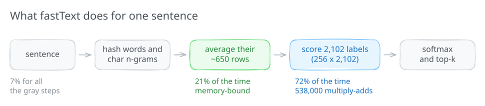
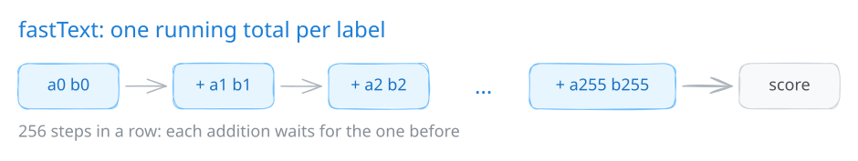
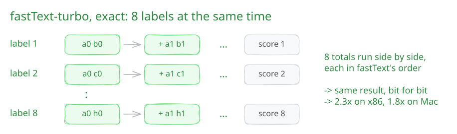
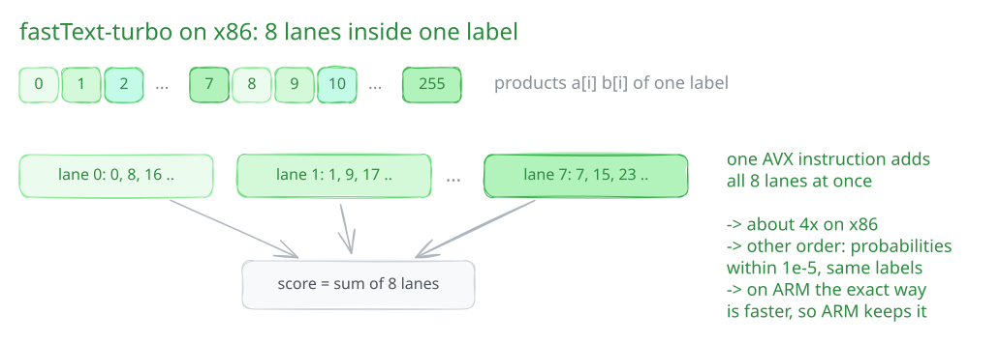
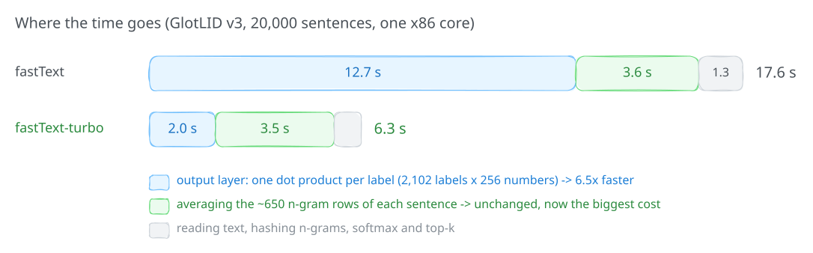
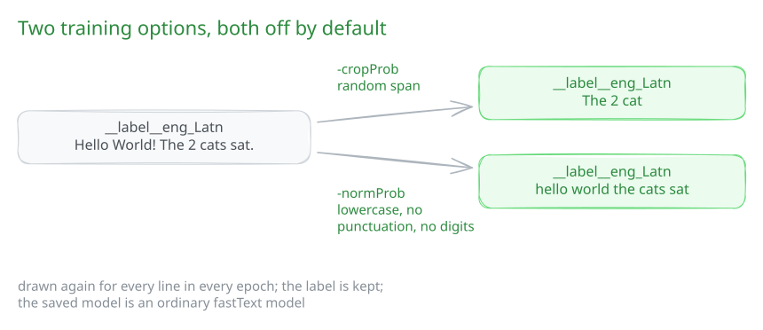

GlotLID is a fastText model. Projects like FineWeb2 run it over billions of documents, so every bit of prediction speed counts. fastText-turbo is a small fork of fastText that predicts about 4x faster on x86 and 1.7x faster on Apple silicon, on one core, with the same models and the same labels.
- Trained models are byte-identical to fastText's, and model files load in either one.
- On ARM, prediction output is byte-identical. On x86, labels are the same and probabilities differ by at most about 1e-5.
- It is still
import fasttextand thefasttextcommand, with wheels for NumPy 1 and 2.
pip uninstall fasttext # both packages provide the `fasttext` module
pip install fasttext-turboWhere the time goes
To label one sentence, fastText hashes each word and its character n-grams (2 to 5 characters for GlotLID) into rows of a big table. It averages those rows into one vector of 256 numbers. Then it scores that vector against each of the 2,102 labels, and softmax turns the scores into probabilities.

Two steps take almost all the time:
- Scoring the labels (72%). Each label is a dot product of 256 numbers. With 2,102 labels, that is about 538,000 multiply-adds per sentence.
- Averaging the rows (21%). An average GlotLID sentence has about 650 n-gram rows. Each row is 1 KB, read from a 1.7 GB table. This step is limited by memory, not arithmetic.
Everything else (reading, hashing, softmax, top-k) adds up to 7%. The output layer was the place to start.
Why the output layer was slow
fastText computes each label's score as one running total: add a[0]·b[0], then a[1]·b[1],
and so on, 256 times.

The multiplications are cheap. The trouble is that each addition needs the result of the one before it. A modern core can start several floating-point additions per cycle, but an addition takes about 4 cycles to finish. With only one chain of additions, the core spends most of its time waiting.
Fix 1: eight labels at once, exactly
fastText-turbo scores 8 labels together. Each label still has its own running total, added in exactly fastText's order, so every score is the same number, bit for bit. The 8 chains don't depend on each other, so the core can keep 8 additions in flight instead of 1.

One detail matters here: clang on macOS fuses a multiply and an add into one FMA instruction by default. That rounds differently from fastText built elsewhere, so this loop turns FMA contraction off. The training code uses only this exact path, which is why trained models stay byte-identical.
Fix 2: eight lanes inside one label (x86, prediction only)
On x86, an AVX register holds 8 floats. Instead of one total per label, fastText-turbo keeps 8 partial totals for each label: lane 0 adds products 0, 8, 16, …, lane 1 adds 1, 9, 17, …, and so on. One instruction advances all 8 lanes, and at the end the lanes are added together.

This adds the same numbers in a different order, so the last bits of a score can change. On GlotLID v3 the largest change to any probability was 1.1e-5. A probability of 0.99 still prints as 0.99, and on 20,000 test sentences every top-1 label matched fastText. The lane version runs only when predicting; training never uses it.
On Apple silicon the exact 8-label version was already the fastest, so ARM builds keep it, and their output is byte-identical to fastText.
Smaller exact changes
- Top-k: labels whose score is too low to make the top k are skipped before the
logis computed. - Hashing: each n-gram's hash is extended from the previous one instead of being recomputed from its first character.
- Threads:
fasttext predict model.bin input.txt k th threadssplits the input across threads and writes the output in input order.
After: where the time goes now

The output layer went from 12.7 s to 2.0 s, 6.5x faster. Averaging the rows did not change, so it is now the biggest cost: 3.5 s of 6.3 s, or 56%.
Where the next speedups are
Averaging is bound by memory. The ~650 rows of a sentence are scattered across a 1.7 GB table, so most reads miss the CPU cache and wait for main memory. Faster arithmetic won't help much here. Reading fewer bytes will:
- Smaller rows: a smaller dimension, or rows stored in 16 or 8 bits, cuts the bytes read per sentence.
- A smaller table: fewer hash buckets, or dropping rare n-grams, keeps more of the table in cache.
- Prefetching: all of a sentence's row numbers are known before any row is read, so the CPU can be told to fetch them early.
Each of these changes the model or its storage, not only the code, so none of them is in fastText-turbo. They are candidates for future GlotLID models.
Two training options
We use fastText-turbo to train the next GlotLID, so it has two training options, both off by default. Real inputs are often short, or have been lowercased and stripped of punctuation before language identification. These options show the model such lines during training.

-cropProb P -cropMin A -cropMax B -cropUnit char|word: with probability P, train on a random span of A to B characters or words of the line.-normProb P: with probability P, train on the line lowercased and without punctuation and digits, like the CommonLID input cleaner.
Both are drawn again for each line in each epoch, and the label is kept. They are not saved in the model, so the result is an ordinary fastText model. With both at 0, training is byte-identical to fastText.
Benchmarks
All numbers are lines per second for GlotLID v3 on 20,000 sentences, on one core unless noted.
1x is fastText just before kpu's commits (6c2204b), measured separately
for the command line and for Python, and on each machine. Ubuntu is an x86-64 server; Mac is Apple silicon.
Command line
| Version | Ubuntu | Mac | Output vs fastText |
|---|---|---|---|
fastText before kpu (6c2204b) | 1,327 · 1.00x | 4,593 · 1.00x | reference |
| fastText v0.9.2 | 1,341 · 1.01x | 4,581 · 1.00x | identical |
| kpu/fasterText | 1,370 · 1.03x | 4,486 · 0.98x | identical |
fastText main (1142dc4) | 1,382 · 1.04x | 4,559 · 0.99x | identical |
| tshev/faster-FastText | 4,468 · 3.37x | 7,093 · 1.54x | same labels, probabilities differ |
| tshev/faster-FastText, giphy branch | 1,159 · 0.87x | 7,145 · 1.56x | same labels, probabilities differ |
| fastText-turbo | 5,486 · 4.13x | 7,907 · 1.72x | Ubuntu: same labels, probabilities within 1.1e-5; Mac: identical |
tshev's forks are built with -ffast-math -march=native, so their binaries only run on the CPU they were built for. fastText-turbo uses neither, so the same wheel runs everywhere.
Python
model.predict(list) and one sentence at a time, each package in a fresh virtual environment.
| PyPI package | NumPy | Ubuntu, list | Ubuntu, one by one | Mac, list | Mac, one by one |
|---|---|---|---|---|---|
| fastText before kpu (built from source) | 1 | 1,137 · 1.00x | 1,125 · 1.00x | 3,945 · 1.00x | 3,988 · 1.00x |
fasttext 0.9.3 | 1 | 1,292 · 1.14x | 1,281 · 1.14x | 3,904 · 0.99x | 3,808 · 0.95x |
fasttext 0.9.3 | 2 | 1,289 · 1.13x | fails | 3,998 · 1.01x | fails |
fasttext-wheel | 1 | 1,263 · 1.11x | 1,239 · 1.10x | 3,991 · 1.01x | 3,931 · 0.99x |
fasttext-numpy2 | 2 | 1,386 · 1.22x | 1,367 · 1.22x | 3,941 · 1.00x | 3,927 · 0.98x |
fasttext-numpy2-wheel | 2 | 1,352 · 1.19x | 1,332 · 1.18x | 3,972 · 1.01x | 3,948 · 0.99x |
fasttext-predict | none | fails | 1,230 · 1.09x | fails | 3,980 · 1.00x |
fasttext-turbo | 2 | 3,652 · 3.21x | 3,576 · 3.18x | 6,698 · 1.70x | 6,655 · 1.67x |
fasttext-turbo | 1 | 3,452 · 3.04x | 3,415 · 3.04x | 6,765 · 1.71x | 6,699 · 1.68x |
"fails": fasttext 0.9.3 raises a ValueError on single strings under NumPy 2, and fasttext-predict does not accept lists. Every package that ran gave the same top-1 label as fastText on all 20,000 sentences.
Threads
Command line, 200,000 sentences, compared with fastText before kpu on one thread.
| Threads | Ubuntu, lines/s | Ubuntu | Mac, lines/s | Mac |
|---|---|---|---|---|
| fastText, 1 | 1,326 | 1.00x | 3,986 | 1.00x |
| turbo, 1 | 5,525 | 4.17x | 6,816 | 1.71x |
| turbo, 2 | 12,158 | 9.17x | 13,852 | 3.48x |
| turbo, 4 | 23,580 | 17.8x | 27,359 | 6.86x |
| turbo, 8 | 45,878 | 34.6x | 51,982 | 13.0x |
| turbo, 12 | – | – | 59,094 | 14.8x |
| turbo, 16 | 90,166 | 68.0x | – | – |
| turbo, 32 | 121,693 | 91.7x | – | – |
| turbo, 44 | 160,688 | 121x | – | – |
Try it
pip install fasttext-turbo
import fasttext
model = fasttext.load_model("model.bin")
model.predict("Hello, how are you?", k=3)The code is at github.com/CommonGlot/fastText-turbo and the package is fasttext-turbo on PyPI. It changes fastText in four commits on top of upstream, so it is easy to review.